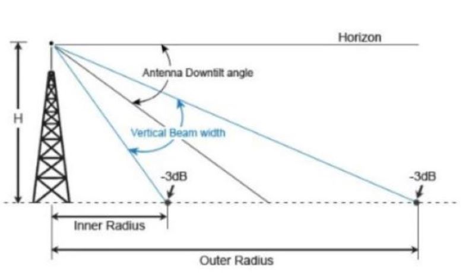

Cálculo de Tilt
Middle Tilt (Teta M): -°
Upper Tilt (Teta U): -°
Lower Tilt (Teta L): -°
Cálculo de X
Distancia Máxima (X): - m
Referencia de Calculo

Middle Tilt (Teta M): -°
Upper Tilt (Teta U): -°
Lower Tilt (Teta L): -°
Distancia Máxima (X): - m